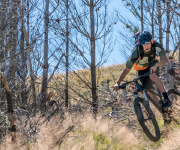
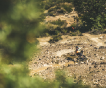
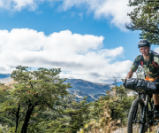
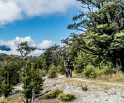
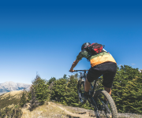

Mountain M8 is mobile only.
To demo the app, resize your browser or download the app from the App Store or Google Play
Select Trail
Where do you want to ride?

Sawmill Track

Scenic Loop
Wind Turbine Trail

Pohill Reserve

Stensness Trail

Downhill Track